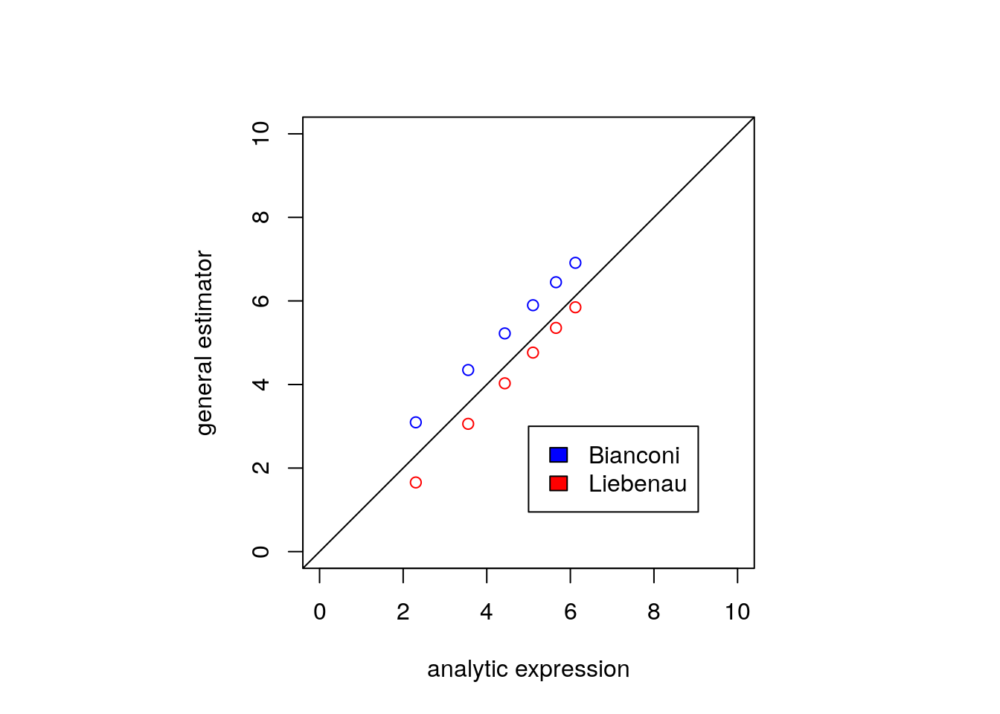
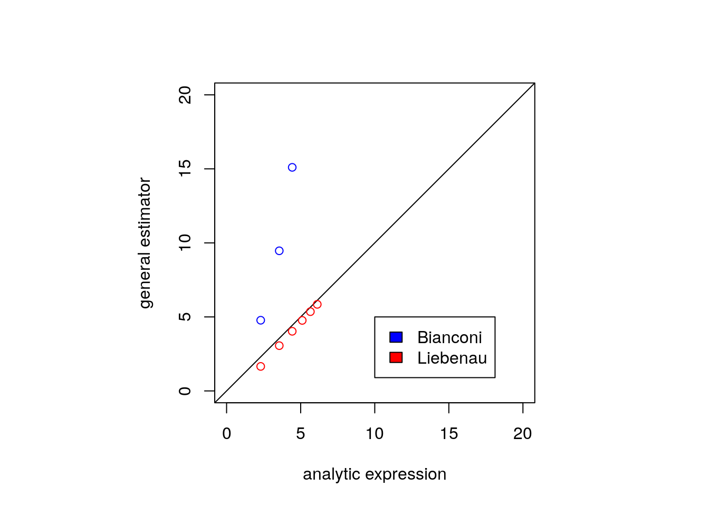

Recap
Anthony Ebert
25/11/2019
library(StartNetwork)
library(parallel)
library(ggplot2)
sessionInfo()## R version 3.6.1 (2019-07-05)
## Platform: x86_64-pc-linux-gnu (64-bit)
## Running under: Ubuntu 18.04.3 LTS
##
## Matrix products: default
## BLAS: /usr/lib/x86_64-linux-gnu/openblas/libblas.so.3
## LAPACK: /usr/lib/x86_64-linux-gnu/libopenblasp-r0.2.20.so
##
## locale:
## [1] LC_CTYPE=en_AU.UTF-8 LC_NUMERIC=C
## [3] LC_TIME=en_AU.UTF-8 LC_COLLATE=en_AU.UTF-8
## [5] LC_MONETARY=en_AU.UTF-8 LC_MESSAGES=en_AU.UTF-8
## [7] LC_PAPER=en_AU.UTF-8 LC_NAME=C
## [9] LC_ADDRESS=C LC_TELEPHONE=C
## [11] LC_MEASUREMENT=en_AU.UTF-8 LC_IDENTIFICATION=C
##
## attached base packages:
## [1] parallel stats graphics grDevices utils datasets methods
## [8] base
##
## other attached packages:
## [1] ggplot2_3.2.0 StartNetwork_0.5.1
##
## loaded via a namespace (and not attached):
## [1] igraph_1.2.4.1 Rcpp_1.0.2 knitr_1.23 magrittr_1.5
## [5] tidyselect_0.2.5 munsell_0.5.0 colorspace_1.4-1 R6_2.4.0
## [9] rlang_0.4.0 dplyr_0.8.3 stringr_1.4.0 tools_3.6.1
## [13] grid_3.6.1 gtable_0.3.0 xfun_0.8 withr_2.1.2
## [17] htmltools_0.3.6 assertthat_0.2.1 yaml_2.2.0 lazyeval_0.2.2
## [21] digest_0.6.20 tibble_2.1.3 crayon_1.3.4 purrr_0.3.2
## [25] glue_1.3.1.9000 evaluate_0.14 rmarkdown_1.14 stringi_1.4.3
## [29] compiler_3.6.1 pillar_1.4.2 scales_1.0.0 pkgconfig_2.0.2Tests
Entropy
We compare entropy computed with the non-parameter estimator entropy_calc using samples from the binomial distribution, with the analytic expression for the limit of entropy for the binomial distribution. The same comparison is also made with the Poisson distribution.
x <- rbinom(10000, 1000, 0.9)
entropy_calc(x)## [1] 3.6881581/2 * log(2*pi*exp(1)*1000*0.9*0.1)## [1] 3.668843lambda <- 50
x <- rpois(1000, lambda)
entropy_calc(x)## [1] 3.376926k <- 1:100
lambda * (1 - log(lambda)) + exp(-lambda) * sum((lambda^k * lfactorial(k))/factorial(k))## [1] 3.373266Combinations of degree sequences
Disjoint edges
disjoint <- choose(choose(seq(15, 7, by = -2),2), 1)
x <- cumsum(log(disjoint[1:5]))
disjoint_dd <- function(x, type = "log", n = 15){
number_of_graphs_dd(c(rep(0,n - 2*x), rep(1, 2*x)), type = type)
}
y0 <- sapply(1:5, disjoint_dd)
y1 <- sapply(1:5, disjoint_dd, type = "log1")par(pty="s")
plot(x, y0, xlim = c(0, 20), ylim = c(0, 20), asp = 1)
points(x, y1, col = "red")
abline(c(0,1), col = "blue")
plot(x, y0 - x, xlim = c(0, 20), ylim = c(-6, 6))
points(x, y1 - x, col = "red")
Single triangle
n <- seq(5, 15, by = 2)
#onetriangle <- choose(choose(n,2), 1) * (n - 2)
onetriangle <- choose(n,3)
x <- log(onetriangle[1:6])
triangle_dd <- function(x, type = "log", n = 15){
number_of_graphs_dd(c(rep(0,x - 3), c(2,2,2)), type = type)
}
y0 <- sapply(n, triangle_dd)
y1 <- sapply(n, triangle_dd, type = "log1")par(pty="s")
plot(x, y0, xlim = c(0, 10), ylim = c(0, 10), asp = 1)
points(x, y1, col = "red", asp = 1)
abline(c(0,1), col = "blue")
plot(n, y0 - x, xlim = c(0, 15), ylim = c(-60, 60))
points(n, y1 - x, col = "red", asp = 1)
Single reverse triangle
n <- seq(5, 15, by = 2)
#onetriangle <- choose(choose(n,2), 1) * (n - 2)
onetriangle <- choose(n,3)
x <- log(onetriangle[1:6])
triangle_dd <- function(x, type = "log"){
number_of_graphs_dd(c(rep(x - 1 - 3,x - 3), c(0,0,0)), type = type)
}
y0 <- sapply(n, triangle_dd)
y1 <- sapply(n, triangle_dd, type = "log1")par(pty="s")
plot(x, y0, xlim = c(0, 20), ylim = c(0, 20), asp = 1)
points(x, y1, col = "red", asp = 1)
abline(c(0,1), col = "blue")
plot(n, y0 - x, xlim = c(0, 15), ylim = c(-60, 60))
points(n, y1 - x, col = "red", asp = 1)
It seems that the base measure for the sorted degree sequence is more accurately measured for spare graphs than dense graphs. Let’s look now at graphs in the middle, regular graphs where the degree is n/2.
Regular graph
The analytic expression for the number of regular graphs is reported by McKay and Wormald (1991).
n <- seq(6, 20, by = 2)
#onetriangle <- choose(choose(n,2), 1) * (n - 2)
d <- n / 2
lambda <- d / (n - 1)
regulargraphs <- sqrt(2) * exp(0.25) * (lambda^lambda * (1-lambda)^(1-lambda))^choose(n,2) * (choose(n-1,d)^n)
x <- log(regulargraphs)
regular_dd <- function(x, type = "log"){
number_of_graphs_dd(rep(x/2,x), type = type)
}
y0 <- sapply(n, regular_dd)
y1 <- sapply(n, regular_dd, type = "log1")par(pty="s")
plot(x, y0, xlim = c(0, 110), ylim = c(0, 110), asp = 1)
points(x, y1, col = "red", asp = 1)
abline(c(0,1), col = "blue")plot(n, y0 - x, xlim = c(0, 15), ylim = c(-60, 60))
points(n, y1 - x, col = "red", asp = 1)
Examples
n = 15
replicates = 400Example 1
Mechanistic model: GNP
Network model: ERGM
Integral stat: sorted degree sequence
Likelihood stat: number of edges
mech_net_gnp = function(p, n, args){
args$p = p;
args$n = n;
do.call(igraph::sample_gnp, args)
}
mech_args_gnp = list(directed = FALSE)
lstat = function(x){igraph::gsize(x)}
true_value <- 0.1
theta_p <- rep(seq(0.01, 0.2, by = 0.01), 5)
theta_s <- log(true_value/(1 - true_value))
cl <- makeCluster(detectCores())
g <- parSapply(cl, theta_p, KL_net, theta_s = theta_s, n = n, mech_net = mech_net_gnp, mech_args = mech_args_gnp, replicates = replicates, lstat = lstat, sorted = TRUE, type = "log")
stopCluster(cl)df <- data.frame(parameter = theta_p, KL = g)
ggplot(df) + aes(x = parameter, y = KL, group = parameter) + geom_boxplot() + ggtitle("Example 1") + geom_vline(xintercept = true_value)
Example 2
Mechanistic model: GNP
Network model: ERGM
Integral stat: sorted degree sequence
Likelihood stat: number of edges
mech_net_gnp = function(p, n, args){
args$p = p;
args$n = n;
do.call(igraph::sample_gnp, args)
}
mech_args_gnp = list(directed = FALSE)
lstat = function(x){igraph::gsize(x)}
true_value <- 0.9
theta_p <- rep(seq(0.80, 0.99, by = 0.01), 5)
theta_s <- log(true_value/(1 - true_value))
cl <- makeCluster(detectCores())
g <- parSapply(cl, theta_p, KL_net, theta_s = theta_s, n = n, mech_net = mech_net_gnp, mech_args = mech_args_gnp, replicates = replicates, lstat = lstat, sorted = TRUE, type = "log1")
df <- data.frame(parameter = theta_p, KL = g)
ggplot(df) + aes(x = parameter, y = KL, group = parameter) + geom_boxplot() + ggtitle("Example 2") + geom_vline(xintercept = true_value)
stopCluster(cl)Bibliography
McKay, Brendan D, and Nicholas C Wormald. 1991. “Asymptotic Enumeration by Degree Sequence of Graphs with Degreeso (N 1/2).” Combinatorica 11 (4). Springer: 369–82.